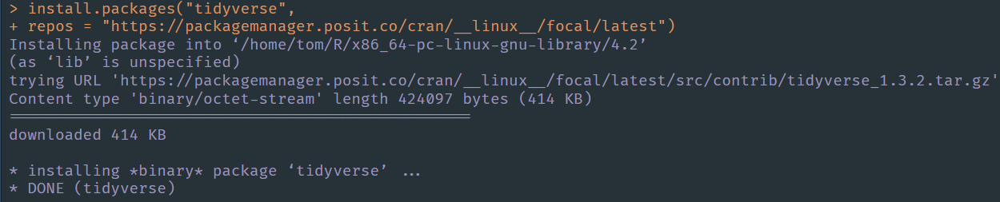
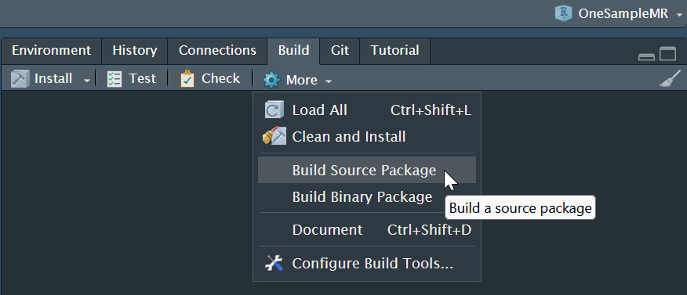
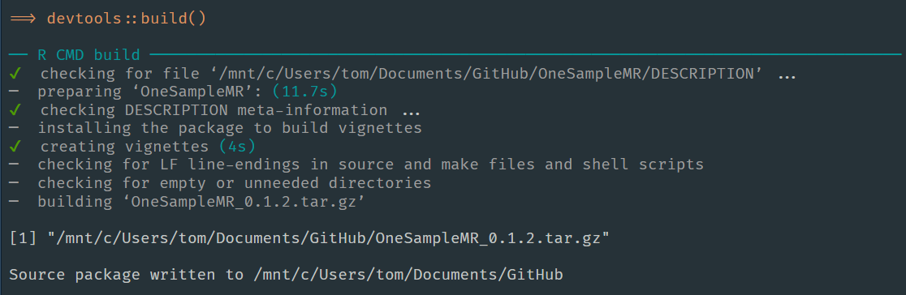
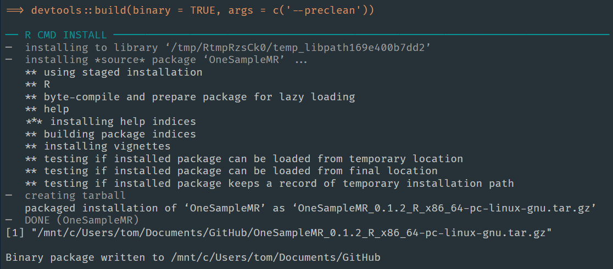
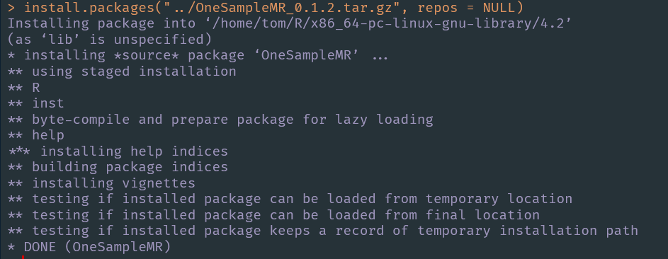
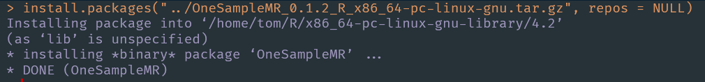
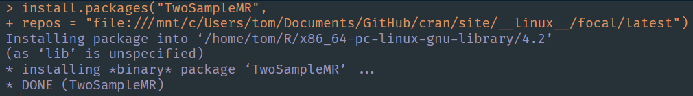

CRAN is a fantastic resource, in particular because it provides binary packages for Windows and macOS (for both Intel and Apple Silicon Macs). Because there are so many Linux distributions CRAN does not provide binary packages for Linux and so installing R packages on Linux can be slow as the bundled source packages need to be built on users machines.
Let’s install a package from the Posit Package Manager on Ubuntu Linux.  Woah! Something magical just happened, we installed a binary R package on Linux! How did that happen, let’s find out.1
I will use an example of one of my own packages OneSampleMR. I am running RStudio server on Ubuntu Linux, Focal Fossa through Windows Subsystem for Linux.
The package sources are in a Git repository hosted on GitHub, here. There is an .Rproj file, which we open in RStudio as a project.
To build an R package we require all of its dependency packages are installed, so we install those with devtools::install_dev_deps() and if your package requires any system libraries those must be installed too.
The Build pane gives us two convenient options, which will build either the bundled source package or binary package through calls to devtools::build().

Clicking on both in turn we see the following.


The bundled source package has been built as OneSampleMR_0.1.2.tar.gz and the binary package has been built as OneSampleMR_0.1.2_R_x86_64-pc-linux-gnu.tar.gz. Both files are in the directory above the project.
We can achieve the same output by making direct calls to R CMD build and R CMD install --build in a shell if preferred. We can test that these install as follows.


In two excellent blog posts Marks Sellors describes how to make a CRAN-like repository.2 There is also the miniCRAN package to help do this, but we don’t need to use this for the following explanation.
To host bundled source packages, such as our OneSampleMR_0.1.2.tar.gz file, we require the following directory structure (noting that the latest directory is optional, but allows us to add snapshot directories if we wanted to).
/mycran
└── latest
└── src
└── contrib
└── 4.3.0
└── RecommendedSpecifically, we place the .tar.gz files into the .../src/contrib directory. In that directory we then run
tools::write_PACKAGES(type = "source")which generates 3 additional files (PACKAGES, PACKAGES.gz, and PACKAGES.rds) which R will use to query what packages are available in our repository when its served on the web.
We saw above how to build a binary Linux package. The same process, when repeated on Windows will generate a file called package_version.zip and package_version.tgz on macOS (on Macs with both Intel and Apple Silicon processors).
Assuming that we have some of these files we need to know where to put them. Since CRAN distributes binary packages for Windows and macOS we follow their directory structure, which is as follows.
/mycran
└── latest
├── bin
│ ├── macosx
│ │ ├── big-sur-arm64
│ │ │ └── contrib
│ │ │ └── 4.2
│ │ └── contrib
│ │ └── 4.2
│ └── windows
│ └── contrib
│ └── 4.2
└── src
└── contrib
└── 4.3.0
└── RecommendedNoting that the current version of R is 4.2.2 and that the relevant directory name with the minor version number changes when R’s current minor version number changes, we place
.../bin/macosx/big-sur-arm64/contrib/4.2/ directory.../bin/macosx/contrib/4.2/ directory, and.../bin/windows/contrib/4.2/ directory.We then run tools::write_PACKAGES(type = "mac.binary") (changing to type = "win.binary" as required) in each of these directories to generate the 3 PACKAGES files.
CRAN does not distribute Linux binary packages and so there is no folder structure from them to copy.
However both the Posit Package Manager and the R4Pi project achieve this in a very clever way.3
We saw above that on Linux bundled source packages have filenames of the form package_version.tar.gz whereas the binary package filenames are of the form pkgname_version_R_x86_64-pc-linux-gnu.tar.gz (note the text after package_version_ maybe different depending on your machine and distro).
To distribute the Linux binary packages we create a parallel directory structure, which takes the same form as for the bundled source packages. In the case of Ubuntu Focal Fossa the Posit Package Manager uses __linux__/focal/latest/src/contrib.
They then rename the pkgname_version_R_x86_64-pc-linux-gnu.tar.gz files to the same form as the bundled source package files, i.e., to pkgname_version.tar.gz. And they put them in this new src/contrib directory.
The structure of our CRAN-like repository (well in fact our 2 parallel repositories) is now.
/mycran
├── __linux__
│ └── focal
│ └── latest
│ └── src
│ └── contrib
│ └── 4.3.0
│ └── Recommended
└── latest
├── bin
│ ├── macosx
│ │ ├── big-sur-arm64
│ │ │ └── contrib
│ │ │ └── 4.2
│ │ └── contrib
│ │ └── 4.2
│ └── windows
│ └── contrib
│ └── 4.2
└── src
└── contrib
└── 4.3.0
└── RecommendedWe then run
tools::write_PACKAGES(type = "source")in the .../__linux__/distro-name/src/contrib directory for each Linux distribution that we make a parallel directory structure for.
Once this folder structure is being served we can set our repository in R to .../__linux__/focal/latest and R will find the binary package package_version.tar.gz files in the ...__linux__/focal/src/contrib/ directory, as per the first figure in this post.
Note that the package_version.tar.gz files within __linux__/focal/latest/src/contrib do not all have to be of binary packages. They can be a mix of bundled source and binary packages, which is helpful if you haven’t had time to build all your binary package files.
You can either run a local web server or use the file://... URL notation as your repos global options setting (set with option(repos = ...) or as the repos argument to install.packages()).
Here’s a screenshot of installing a binary package on Ubuntu Focal Fossa using install.packages("package", repos = "file://...").

We have taken a look at the structure of a CRAN-like repository and built bundled source and binary package files. We then saw that the trick for distributing Linux binary packages is to make a parallel directory with the same structure as that required for bundled source packages. We then saw that we need to rename the binary package files to have the same filename format as the bundled source package files.
Note that there are other approaches to distributing binary R packages on Linux, see https://cran.r-project.org/bin/linux/ and links therein, https://eddelbuettel.github.io/r2u/, and https://enchufa2.github.io/bspm/↩︎
https://blog.sellorm.com/2019/03/29/lifting-the-lid-on-cran/ and https://blog.sellorm.com/2019/03/30/build-your-own-cran-like-repo/↩︎
See https://packagemanager.rstudio.com/client/#/repos/2/overview and https://pkgs.r4pi.org/↩︎